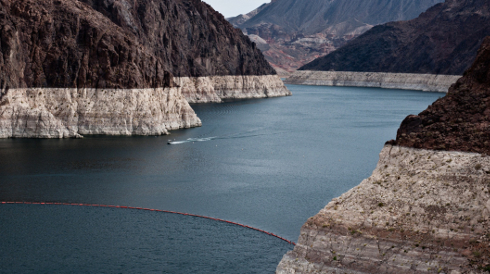
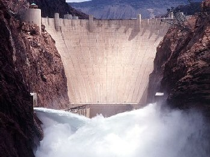
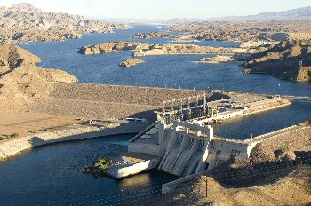
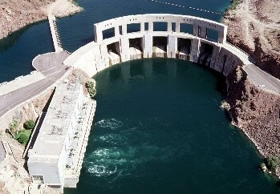
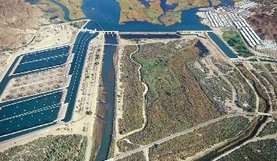

Blue Dragon Overview

The Bureau of Reclamation's Lower Colorado Dams Office manages, operates and maintains Hoover, Davis and Parker Dams and their associated powerplants and facilities on the lower Colorado River.
Constructed in the 1930s, 40s and 50s, these dams and others on the Lower Colorado have been essential to the growth and sustainability of the American Southwest.
Through coordinated operations, they reliably deliver an annual average of 9 million acre-feet of Colorado River to urban and agricultural water users, including Indian Tribes, in Arizona, Nevada, and California.
They also annually deliver 1.5 million acre-feet of water to customers in Mexico, and they protect downstream communities from floods, and annually generate more than 6.5 billion kilowatt-hours of electricity that is distributed throughout the West.
Reservoirs developed by these projects provide year-round recreational areas that are enjoyed by millions, and fish, wildlife and birds thrive in the wetlands, backwaters, and habitats that are sustained by the constant water supply and river flows that these projects deliver and maintain.
Hoover Dam

Hoover Dam and Lake Mead, spanning the Arizona-Nevada state line, are located in the Black Canyon of the Colorado River about 35 miles southeast of Las Vegas, Nevada.
It is a concrete thick-arch structure, 726.4 feet high and 1,244 feet long.
The dam contains 3.25 million cubic yards of concrete; total concrete in the dam and appurtenant works is 4.4 million cubic yards.
More information
Davis Dam

Davis Dam spans the Colorado River in Pyramid Canyon 67 miles downstream from Hoover Dam and 88 miles upstream from Parker Dam.
The Mexican Treaty of 1944 required the United States to construct Davis Dam for regulation of water to be delivered to Mexico.
The reservoir formed by the dam, Lake Mohave, is used for that purpose through integrated operations of Hoover and Davis Powerplants.
Davis Dam, rising 200 feet above the lowest point of the foundation and about 140 feet above the level of the river, is a zoned earthfill structure with concrete spillway, intake structure, and powerplant.
It has a crest length of 1,600 feet, and a top width of 50 feet.
Its reservoir, Lake Mohave, has a total storage capacity of 1,818,300 acre-feet, and at maximum capacity extends 67 miles upstream to the tailrace of the Hoover Powerplant.
More information
Parker Dam

Parker Dam is a concrete arch structure commonly called the "deepest dam in the world."
Seventy-three percent of the dam's structural height of 320 feet is below the original river bed; only about 85 feet of the dam's strucural height is visible (its superstructure rises another 62 feet above the roadway across the top of the dam).
Parker Dam has a volume of 380,000 cubic yards of concrete.
At its crest, the dam is 856 feet long.
Water control is provided by five 50-ft-square gates.
Lake Havasu backs up behind the dam for 45 miles and covers more than 20,400 acres (32 square miles).
The reservoir's total capacity is 646,200 acre-feet.
More information
Imperial Dam

Imperial Dam and Desilting Works span the Colorado River 18 miles northeast of Yuma, Arizona.
The purpose of the dam is to raise the water surface 25 feet and provide controlled gravity flow of water into the All-American and Gila Gravity Main Canals.
The desilting works remove most the sediment carried by the Colorado River to prevent clogging of the canals and subsequent extensive maintenance.
Imperial Dam is a reinforced concrete structure of the monolithic slab-and-buttress type consisting of an overflow weir, canal headworks at each end of the dam, and a sluiceway between the All-American Canal Headworks and overflow weir.
The dam is 3,475 feet long, including a 510-foot rockfill dike at the Arizona end.
The 1,198-foot-long overflow weir, in conjunction with the California Sluiceway, is designed to pass a maximum flood of 185,000 cubic feet per second, not including any diversions to the canal systems.
More information
Morelos Dam

Morelos Diversion Dam Project Pursuant to the 1944 Water Treaty, Mexico constructed at its expense and under the supervision of the IBWC a main diversion structure in the limitrophe section of the Colorado River, to enable that country to divert the major part of its allotted waters from the river.
The waters diverted are used to irrigate the extensive and highly-developed lands in the Mexicali Valley.
The dam is located 1.1 miles (2 km) downstream from the point where the California-Baja California land boundary intersects the river.
The dam is made of reinforced concrete spanning 1,400 feet (426.72 m) across the Colorado River.
It supports 20 electrically-operated, radial gates to control stages of the Colorado River to enable diversions through the adjoining intake structure that supports 12 radial gates which control diversions westward to the canal system in Mexico.
The river part of the dam is designed to pass a flood of 350,000 cfs (9,911 cms) and the intake structure is designed to pass 8,000 cfs (226 cms).
Morelos Dam is operated and maintained by Mexico under the supervision of the IBWC.
More information